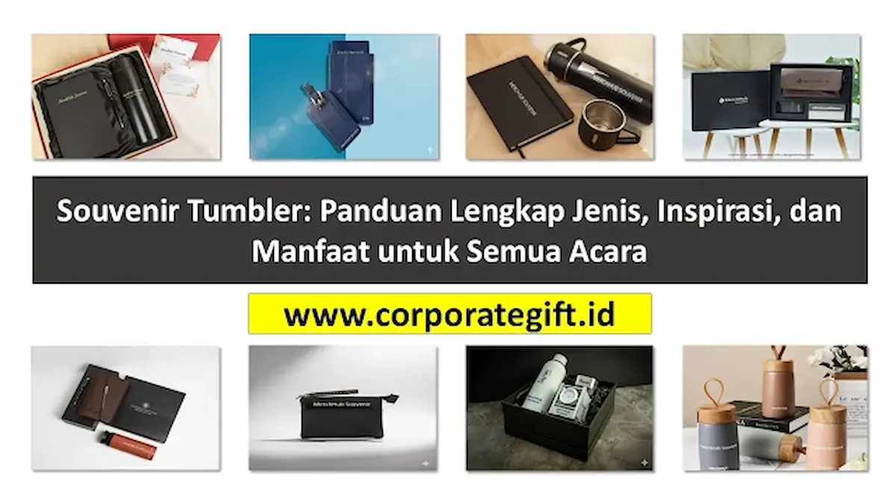

Corporate Gifts ID - Souvenir tumbler adalah botol minum multifungsi berbahan insulasi seperti stainless steel SUS304, kaca borosilikat tahan panas, maupun plastik food grade bebas BPA yang dimanfaatkan sebagai cinderamata resmi atau hadiah apresiasi dalam berbagai agenda, mulai dari resepsi pernikahan, perayaan ulang tahun, hingga seminar dan event korporat berskala besar. Dilengkapi layanan custom logo, nama personal, atau grafir slogan, souvenir tumbler bertransformasi dari sekadar wadah air menjadi instrumen branding berdaya pakai tinggi yang mendampingi aktivitas harian penerimanya selama bertahun-tahun.
Poin Kunci Keunggulan Souvenir Tumbler:
- Nilai Manfaat Harian Tertinggi: Dipakai berulang kali di meja kantor, mobil, maupun gym, menghasilkan eksposur merek organik tanpa henti.
- Retensi Suhu Unggul: Dinding ganda vacuum insulation menjaga kopi tetap panas hingga 8 jam dan air es dingin hingga 18 jam.
- Dukungan Gerakan Eco-Friendly: Membantu mengurangi ketergantungan pada botol air minum kemasan sekali pakai (PET).
- Fleksibilitas Kustomisasi: Mendukung teknik grafir laser permanen, print UV full color timbul, hingga sablon melingkar presisi.
Apa Itu Souvenir Tumbler dan Keunggulannya?
Secara harfiah, tumbler dirancang sebagai wadah portabel dengan penutup rapat anti-tumpah (leak-proof lid). Dalam konteks industri cinderamata korporat, tumbler menduduki peringkat teratas sebagai merchandise paling favorit karena mampu menjembatani kebutuhan estetika, fungsionalitas, dan prestise.
Berbeda dengan suvenir pajangan yang sering kali hanya disimpan di lemari kaca atau berakhir di tempat sampah, tumbler memiliki nilai guna langsung. Penerima merasa mendapatkan hadiah berharga nyata, yang secara psikologis meningkatkan persepsi positif terhadap institusi pemberinya.
Perbedaan Mendasar Tumbler vs Botol Minum Biasa
Banyak orang menyamakan tumbler dengan botol air plastik biasa. Namun dalam standar pengadaan B2B, terdapat tiga perbedaan mendasar:
- Struktur Material dan Keamanan: Botol biasa umumnya memakai plastik tipis sekali pakai atau polietilena biasa. Sebaliknya, souvenir tumbler menggunakan baja tahan karat SUS304 ganda (double-wall vacuum), kaca tebal borosilikat tahan guncangan termal, atau plastik kokoh Tritan berstandar food contact safety.
- Kemampuan Menjaga Suhu: Tumbler vakum memiliki ruang hampa udara di antara dua lapisan dindingnya, memutus konduksi panas sehingga suhu minuman dingin maupun panas terjaga stabil berjam-jam.
- Daya Tarik Kustomisasi: Bodi tumbler didesain khusus dengan lapisan powder coating atau cat doff halus yang sangat ideal sebagai media cetak logo perusahaan maupun ukiran inisial nama.
Tabel Perbandingan Jenis Material Souvenir Tumbler
Memilih jenis tumbler yang tepat bergantung pada profil penerima, konsep acara, dan alokasi anggaran:
| Material Tumbler | Karakteristik & Kelebihan | Metode Cetak Logo Ideal | Rekomendasi Acara |
|---|---|---|---|
| Stainless Steel SUS304 (Vacuum Insulated) | Tahan banting, retensi suhu 12-24 jam, bebas karat, kesan sangat mewah dan berbobot mantap | Laser grafir permanen, Print UV Flatbed timbul | Gift set direksi, seminar kit eksekutif, anniversary korporasi B2B |
| Kaca Borosilikat + Sleeve Silikon | Higiene maksimal, tampilan bening elegan, tidak meninggalkan bau rasa teh/kopi | Sablon silinder, emboss logo pada sleeve silikon | Souvenir pernikahan eksklusif, event beauty/skincare, hampers VIP |
| Eco-Friendly (Bambu & Serat Gandum) | Terbuat dari komposit jerami gandum atau lapisan kayu bambu alami, ramah lingkungan | Laser marking gelap alami, pad printing | Kampanye sustainability ESG, gathering komunitas alam, seminar CSR |
| Plastik PP / Tritan Bebas BPA | Bobot sangat ringan, transparan warna-warni cerah, tidak mudah pecah saat jatuh | Sablon multi-warna, transfer heat digital | Event olahraga fun run, perayaan ulang tahun anak, promosi massal |

Kombinasi warna doff matte dan ukiran laser perak menghadirkan sentuhan profesional pada merchandise tumbler.
Inspirasi dan Aplikasi Tumbler untuk Aneka Acara
Keserbagunaan tumbler menjadikannya relevan di berbagai panggung perayaan:
- Merchandise Kantor dan Onboarding Karyawan: Lengkapi paket souvenir kantor dengan tumbler berlogo instansi dan nama staf untuk membiasakan gaya hidup sehat sekaligus mengurangi timbulan sampah plastik di ruang kerja.
- Souvenir Pernikahan Berkelas: Tumbler dengan ukiran inisial kaligrafi nama pengantin dan tanggal akad menjadi tanda terima kasih yang fungsional dan abadi bagi para tamu undangan.
- Paket Seminar Kit & Konferensi: Dipadukan dengan notebook agenda dan pulpen metal di dalam totebag seminar, tumbler menjadi perlengkapan wajib peserta selama sesi berlangsung.
- Perayaan Ulang Tahun Komunitas / Anak: Menggunakan botol berkarakter ceria dengan sedotan silikon food grade yang aman dan tidak tumpah saat dimasukkan ke dalam tas sekolah.
Manfaat Strategis Tumbler sebagai Media Promosi Jangka Panjang
Bagi praktisi pemasaran, tumbler terbukti menghasilkan metrik Cost Per Impression (CPI) yang paling efisien. Sebuah tumbler stainless steel berkualitas memiliki masa pakai aktif rata-rata 2 hingga 4 tahun.
Selama periode tersebut, tumbler akan dibawa ke kantor, diletakkan di meja rapat, dibawa saat bersepeda, hingga menemani perjalanan dinas luar kota. Setiap momen tersebut memaparkan merek Anda ke ratusan pasang mata rekan sejawat secara natural tanpa terkesan memaksa.
5 Tips Memilih dan Menyiapkan Pesanan Tumbler Custom
Agar investasi pengadaan memberikan kepuasan maksimal, terapkan lima panduan praktis berikut:
- Verifikasi Ketat Standar Food Grade: Pastikan material baja tahan karat yang digunakan bertipe SUS304 (18/8) pada tabung dalam, bukan SUS201 yang rentan korosi saat diisi minuman asam atau kopi panas.
- Sesuaikan Kapasitas Volume: Ukuran 500 ml adalah standar paling seimbang untuk penggunaan kantor, sedangkan ukuran 350 ml lebih praktis untuk tumbler kopi harian, dan 750-1000 ml ideal untuk aktivitas olahraga.
- Pilih Desain Grafir Laser untuk Keawetan: Grafir laser tidak menggunakan bahan kimia tinta sehingga tidak akan terkelupas meski dicuci menggunakan detergen setiap hari.
- Sertakan Kemasan Dus Hardbox Eksklusif: Tambahan kotak kado berpita atau boks silinder kraft memberi impresi premium sejak pandangan pertama.
- Pesan Sampel Fisik (Proofing): Hubungi vendor tepercaya seperti CorporateGifts.ID untuk mendapatkan simulasi digital mockup gratis sebelum memulai pesanan massal.
Pertanyaan Seputar Souvenir Tumbler (FAQ)
Kesimpulan dan Konsultasi Mockup Gratis
Souvenir tumbler adalah representasi hadiah modern yang sempurna: ramah lingkungan, fungsional tinggi, berpenampilan mewah, dan mampu membawa nama baik institusi ke tingkat yang lebih tinggi. Pastikan kebutuhan cinderamata tumbler Anda ditangani oleh mitra produksi berpengalaman.
Kunjungi katalog CorporateGifts.ID sekarang untuk melihat aneka model tumbler ready-stock dan nikmati fasilitas preview mockup gratis dengan logo organisasi Anda.

Ditulis oleh: Sholikhatun Nikmah
Creative Product Designer & Bespoke Packaging ConsultantDesainer produk dan konsultan pengemasan eksklusif di CorporateGifts.ID. Berpengalaman lebih dari 8 tahun dalam kurasi material drinkware, teknologi cetak UV/laser grafir presisi, dan standardisasi suvenir ramah lingkungan bagi institusi nasional.
Lihat Profil Lengkap & Panduan Lainnya